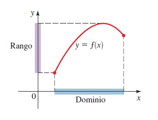
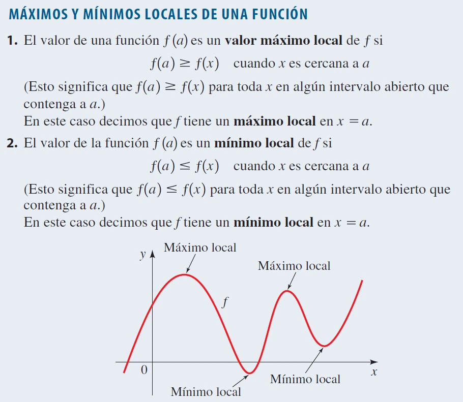

La información a partir de la gráfica de una función se refiere a los datos que se pueden obtener observando su representación visual, como los puntos de intersección con los ejes, el comportamiento creciente o decreciente, máximos y mínimos, asíntotas, y el dominio y rango de la función.
Valores de una función: Dominio y Rango
El dominio es el conjunto de todos los valores posibles de la variable independiente para los que la función está definida, mientras que el rango es el conjunto de todos los valores posibles que puede tomar la variable dependiente.

Ejemplos
Ejemplo 1: Función lineal
f(x) = 2x + 3
Dominio: (-∞,∞)
Rango: (-∞,∞)
Esta es una función lineal sin restricciones, por lo tanto, el dominio y el rango son todos los números reales.
Ejemplo 2: Función cuadrática
f(x) = x²
Dominio: (-∞,∞)
Rango: [0,∞)
En esta función cuadrática, cualquier valor de x es válido, pero los resultados siempre serán mayores o iguales a 0, por lo que el rango es [0,∞).
Video de ayuda
Páginas de ayuda
Funciones Crecientes y Decrecientes
Una función es creciente cuando, al aumentar el valor de la variable independiente, el valor de la función también aumenta. Es decreciente si, al aumentar el valor de la variable independiente, el valor de la función disminuye.


Ejemplos
Ejemplo 1: Función creciente
f(x) = 2x + 1
f(1) = 3
f(3) = 7
La pendiente positiva indica que la función es creciente. Como f(1) = 3 y f(3) = 7, se cumple que f(1) < f(3), confirmando que es creciente.
Ejemplo 2: Función decreciente
f(x) = -3x + 5
f(1) = 2
f(3) = -4
La pendiente negativa indica que la función es decreciente. Como f(1) = 2 y f(3) = -4, se cumple que f(1) > f(3), confirmando que es decreciente.
Video de ayuda
Páginas de ayuda
Valores Máximo y Mínimo Locales de una Función
Los valores máximos y mínimos locales son los puntos donde una función alcanza sus valores más altos o más bajos dentro de un intervalo cercano. Se utilizan derivadas para encontrarlos, derivando la función, encontrando los puntos críticos al igualar la derivada a cero, y aplicando la prueba de la segunda o primera derivada para determinar si son máximos o mínimos.

Ejemplos
Ejemplo 1: Función cuadrática
f(x) = x² - 4x + 3
f'(x) = 2x - 4
2x - 4 = 0 → x = 2
f''(x) = 2
f(2) = 4 - 8 + 3 = -1
La derivada segunda es positiva (f''(x) = 2), indicando un mínimo local. El mínimo local es -1 en x = 2.
Ejemplo 2: Función cúbica
f(x) = x³ - 3x² + 2
f'(x) = 3x² - 6x
3x(x - 2) = 0 → x = 0, x = 2
f''(x) = 6x - 6
f(0) = 2, f(2) = -2
Para x = 0, f''(x) = -6, lo que indica un máximo local en x = 0 con valor 2. Para x = 2, f''(x) = 6, lo que indica un mínimo local en x = 2 con valor -2.